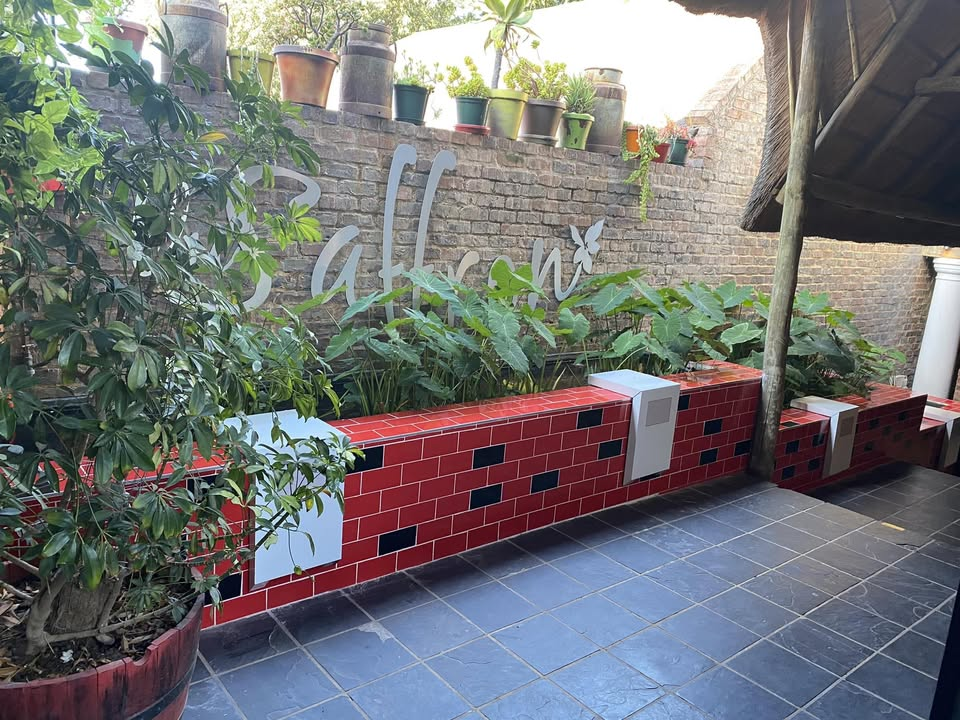
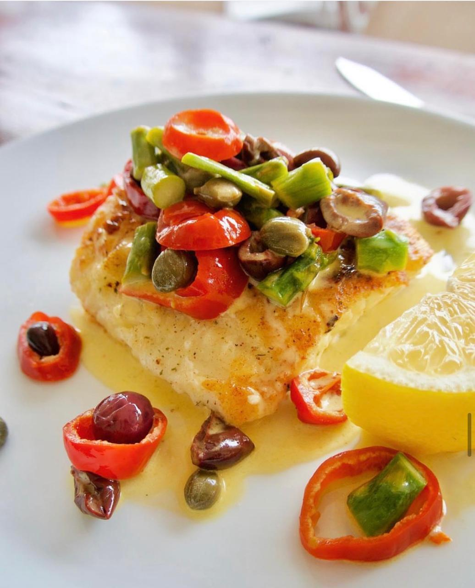

Warm welcome
Genuine hospitality
We treat every guest like a regular — attentive, relaxed and always glad you came.
Home / About
Our storyFor years, Blu Saffron has been a familiar name for Pretoria diners — a place to gather, celebrate and savour something a little special.
Set on Sidney Avenue in the heart of Waterkloof, Blu Saffron grew into one of Pretoria's most-loved restaurants the way the best places do — one warm welcome, one memorable meal at a time. Regulars return for the grills, curries and garden sundowners; newcomers quickly become part of the family.
Our name reflects who we are: the deep, calming blue of an elegant evening, paired with the warmth and richness of saffron — quiet luxury, served without fuss.


Everything at Blu Saffron is prepared fresh to order — from flame-grilled steaks and fragrant curries to the day's finest seafood and vibrant salads. Each dish is plated with care and served with genuine warmth.
We keep our menu focused on what we do best — flavourful food that feels both refined and generous — so every visit is one worth remembering.
Explore the menuWe treat every guest like a regular — attentive, relaxed and always glad you came.
Fresh produce and the day's best cuts and seafood, prepared with skill and pride.
An elegant, welcoming space and garden — perfect for date nights and celebrations alike.
Blu Saffron holds a rating of around 4.6 stars on Google, drawn from 1,650+ guest reviews — a reflection of the loyal Pretoria diners who make our restaurant what it is.
We're grateful for every guest who has shared their experience, and we work hard to earn that trust with each plate we serve.